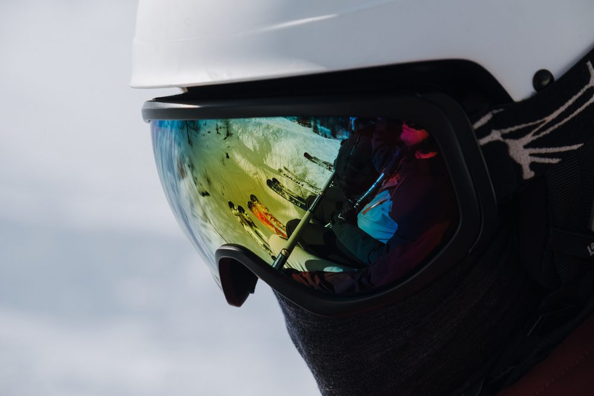

Goggle lens shape explained — cylindrical vs spherical vs toric
 By Dex Okafor · Equipment Selection & Geometry
By Dex Okafor · Equipment Selection & Geometry
Every ski and snowboard goggle uses one of three lens shapes — cylindrical, spherical, or toric — and the shape drives field of view, distortion, glare, fogging, and price more than almost any other spec on the box (OutdoorGearLab, REI). This guide breaks down what each shape actually does, which one fits which face and budget, and where the real tradeoffs are.

Shop ski goggles at OpticsPlanet
Cylindrical, spherical, and toric models from the brands in this guide, plus Rx-compatible sport eyewear — OpticsPlanet stocks one of the widest goggle selections online, so you can compare lens shapes and VLT side by side.
Browse ski goggles at OpticsPlanet →Affiliate link — qualifying purchases may earn a commission. See our affiliate disclosure.
The three lens shapes, geometrically
A cylindrical lens curves only on the horizontal (x) axis — side to side across the face — and stays flat on the vertical (y) axis, like wrapping a flat sheet around a cylinder (OutdoorGearLab, Giro). It's the classic, lower-profile goggle shape and the least expensive to manufacture because it's cut from a flat sheet rather than molded into a compound curve (Absolute Snow).
A spherical lens curves on both the horizontal and vertical axes at once, producing a rounded, bubble-like profile that mimics the natural curve of the human eye (SportRx, Off-Piste). Smith's BirdsEye Vision lens is cited as one of the most dramatic examples of this shape (OutdoorGearLab).
A toric lens splits the difference: a true spherical curve left to right, but noticeably less curvature top to bottom than a full spherical lens — so the frame sits lower profile while keeping most of the optical benefit (SportRx, Sport-Conrad). Toric is newer to the market — reviewers note only a handful of models feature it, including the Anon M4 and Dragon PXV (SportRx, Slope Magazine). Note that goggle brands aren't always consistent with the term — Giro, for example, uses "Toric" as its own brand name for what other manufacturers would call a spherical lens (Giro), so always check the actual curvature spec rather than relying on the marketing label alone.
Cylindrical vs spherical vs toric — comparison table
| Lens shape | Curvature | Optical quality / distortion | Glare | Fogging | Field of view | Relative price |
|---|---|---|---|---|---|---|
| Cylindrical | Curves horizontally only; flat vertically | Lower optical quality; mild distortion near the periphery from the flat vertical plane | More prone to glare — the flat vertical axis creates surfaces for light to hit | Less internal volume, so more prone to fogging | Narrower peripheral view than spherical/toric, though high-end frameless cylindrical designs close much of the gap | Lowest — cheapest to produce |
| Spherical | Curves on both horizontal and vertical axes | Superior optical quality; dual-axis curve mimics the eye and minimizes distortion | Reduced glare — no flat spots for light to reflect off | More internal air volume improves anti-fog performance | Larger field of view and clearer peripheral vision, best for large or wide faces | Highest — more complex compound-curve manufacturing |
| Toric | True spherical curve horizontally, flatter curve vertically | Considered the most optically correct shape; very little peripheral distortion | Reduced glare, similar to spherical | Moderate — more venting surface area than full spherical, which can help reduce fogging | Wide field of view without the extreme bulbous profile of full spherical lenses | Mid-to-premium — newer technology, limited model availability |
Table compiled from OutdoorGearLab's buying advice, SportRx, Sport-Conrad, and Off-Piste Magazine.
Field of view and peripheral vision
Field of view is the single biggest practical difference riders notice. Spherical lenses consistently score highest for peripheral vision because the vertical curve opens up the top and bottom of the viewing window in addition to the sides (REI, Detour Sunglasses). One buying guide puts it simply: if maximum vertical view for steeps and drops is the priority, lean spherical; if a helmet brim rides close to the lens, a lower-profile cylindrical shape avoids interference (Detour Sunglasses).
Toric lenses close most of that gap. Because the horizontal curve is a true spherical radius, side-to-side field of view is comparable to full spherical lenses, while the flatter vertical curve keeps the frame from ballooning outward — reviewers describe it as offering "the best optics without compromising on field of view" (Off-Piste). The Anon M4's toric lens is specifically praised for a wide, unobstructed view that one reviewer found useful for checking blind spots while snowmobiling without turning their head (Slope Magazine).
Frameless designs — where the lens itself forms the goggle's outer edge with no rim — push field of view further regardless of lens shape. High-end frameless cylindrical goggles can offer an excellent, wide field of view despite the flatter vertical curve, and frameless spherical or toric goggles maximize the effect further (Off-Piste, Giro).
Price by lens shape
Cylindrical lenses are consistently the budget option because they're cut from a flat sheet — a simpler, cheaper process than molding a compound curve (Absolute Snow, Sport-Conrad). As an example of that price band, the cylindrical-lens Dragon RVX OTG goggle is listed at $230 (Off-Piste) — cylindrical goggles as a category commonly run from roughly $80–$90 entry-level models up through $200+ premium frameless versions, since lens shape is only one factor in price alongside lens technology (mirrored coatings, photochromic tints) and frame materials.
Spherical lenses generally sit at the top of the price range because the compound curve is more expensive to manufacture and is typically paired with premium lens coatings and larger lens area (Sport-Conrad, Absolute Snow). Toric sits in between — sourced guides don't give a specific toric price band, but note it's a newer technology available in a limited number of models, which tends to keep it priced at mid-to-premium rather than entry-level (SportRx).
One cylindrical-lens advantage worth budgeting around: replacement lenses for cylindrical frames are cheaper and easier to swap than spherical or toric replacements, so if you want multiple tints for different light conditions without buying multiple full goggles, a cylindrical frame can be the more economical path over a season (Absolute Snow).
Which lens shape should you buy
- Budget-conscious or backup goggles: cylindrical. Lower cost, cheap and easy lens swaps, and a low-profile look — the optical tradeoff is real but modest on modern cylindrical lenses (Absolute Snow).
- Maximum peripheral vision, large or wide face, variable-light days: spherical. Best-in-class field of view, glare reduction, and anti-fog performance from the added internal volume, at the highest price point (REI, Sport-Conrad).
- Want spherical-level optics without the bulbous look, or a helmet brim rides close to the lens: toric. A lower-profile frame with side-to-side field of view close to spherical, at a mid-to-premium price (Off-Piste, Detour Sunglasses).
Whichever shape you land on, verify the lens tint or VLT (visible light transmission) separately from the shape — a low-VLT lens suits bright bluebird days, while a higher-VLT lens is better for flat light, overcast, or storm conditions, and some goggles use variable-tint technology to cover a wider range in one lens (Sport-Conrad).